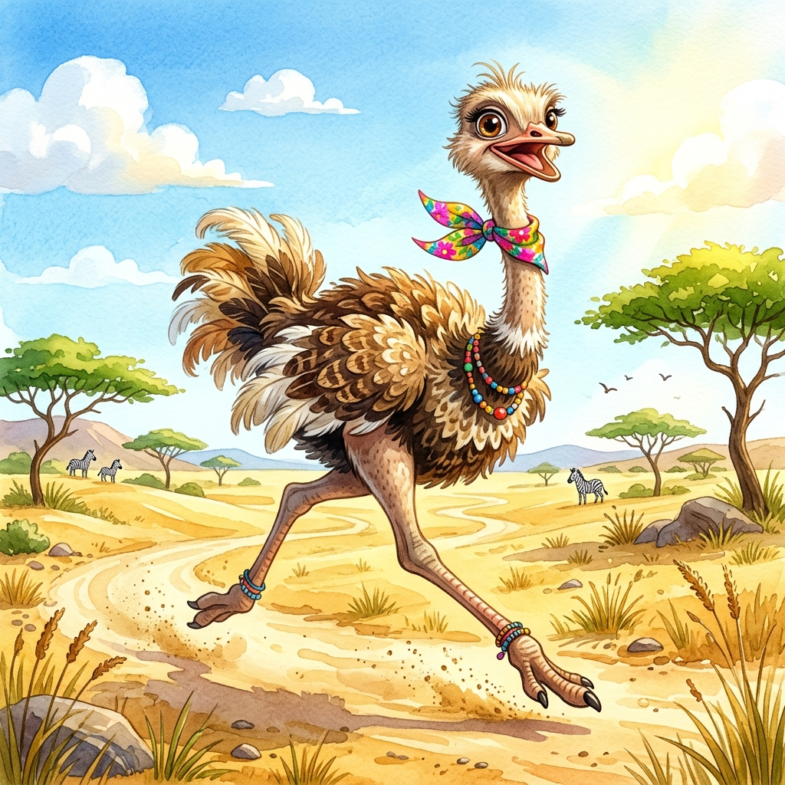
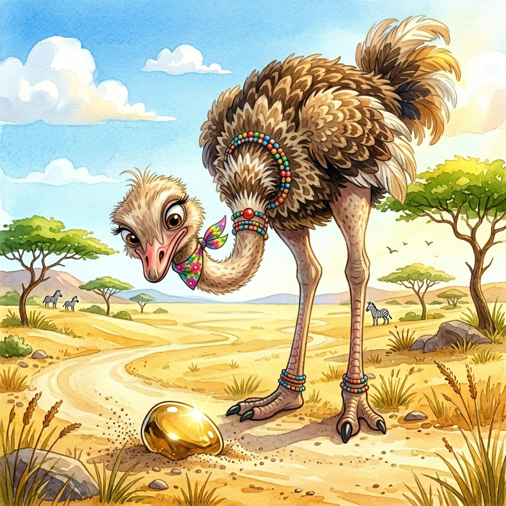
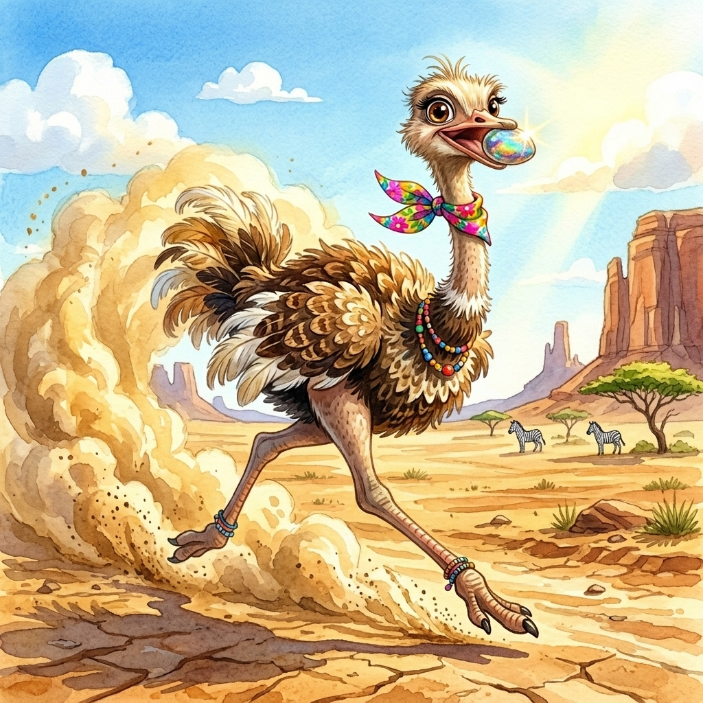
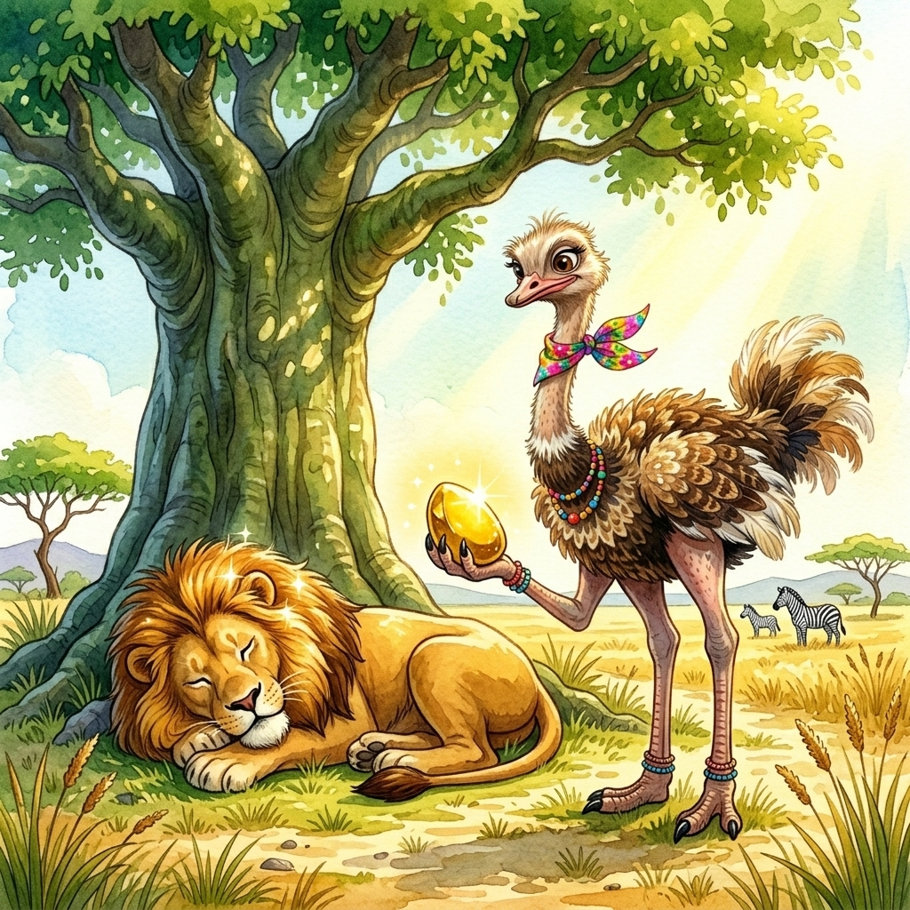
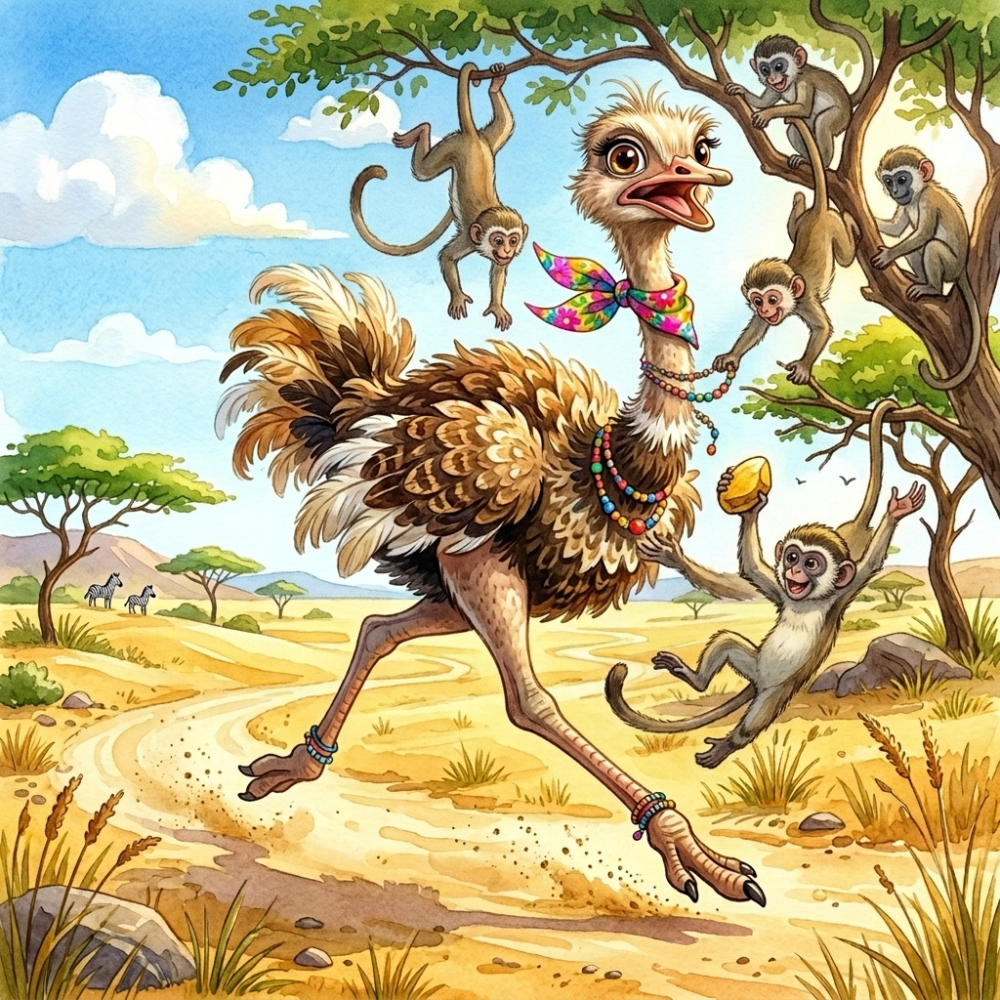
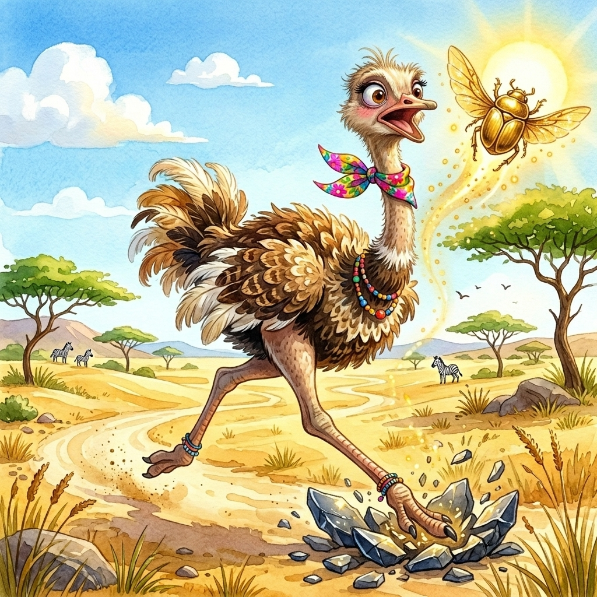

L'Univers de Kiki
L'Autruche Rigolote
Bienvenue dans la savane de Kiki ! 🏜️ Kiki est l'autruche la plus rapide et la plus joyeuse du désert.
Imprime ton Coloriage
{kind=link}
{kind=link}
{kind=link}
Kiki Articulée !
Fabrique ta propre Kiki qui danse et qui court grâce à ce patron avec attaches parisiennes.
✂️ Patron de KikiLe Savais-tu ?
L'autruche est l'oiseau le plus rapide sur terre ! 🏃♀️💨
Elle ne peut pas voler, mais elle peut courir jusqu'à 70 km/h ! Autre fait amusant : ses yeux sont plus gros
que son cerveau !
Sacrée Kiki ! 👀
L'Histoire de Kiki

Par une belle matinée ensoleillée dans la savane, Kiki picorait tranquillement quand elle aperçut un étrange caillou étincelant, à moitié enfoui dans le sable doré. "Oh ! Qu'est-ce que c'est que cette petite chose brillante ?" se demanda-t-elle, les yeux grands ouverts de curiosité.

Pensant avoir trouvé un trésor magique, elle attrapa délicatement le caillou dans son bec. "Je dois absolument montrer ça à tous mes amis !" s'exclama-t-elle. Et hop ! La voilà qui s'élance à toute vitesse à travers les dunes, soulevant un grand nuage de poussière sur son passage.

Après sa course folle, elle trouva son ami le lion qui faisait tranquillement la sieste à l'ombre d'un immense baobab. "Regarde ce que j'ai trouvé !" pérora Kiki, très fière, en déposant la pierre dorée sous le nez du roi de la savane à moitié endormi.

À peine le temps de reprendre son souffle que des petits singes farceurs, suspendus aux branches des acacias, tentèrent de chiper le caillou ! "Hé ! Revenez ici, petits malins !" cria Kiki en courant dans tous les sens pour échapper à leurs longues queues espiègles.

Soudain, le drôle de caillou se mit à vibrer... puis il ouvrit de magnifiques ailes dorées ! "Oh là là !" s'émerveilla Kiki. Ce n'était pas un caillou du tout, mais un superbe scarabée magique qui s'envola gracieusement vers le soleil couchant. Quelle aventure fantastique !